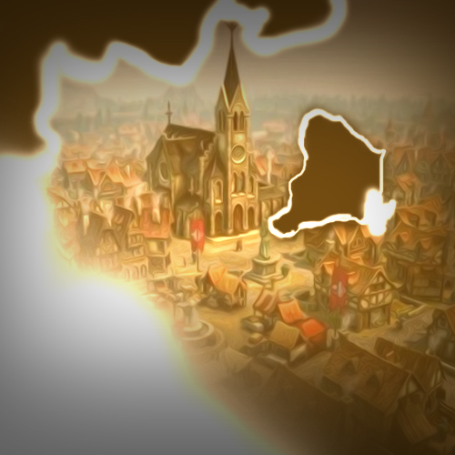
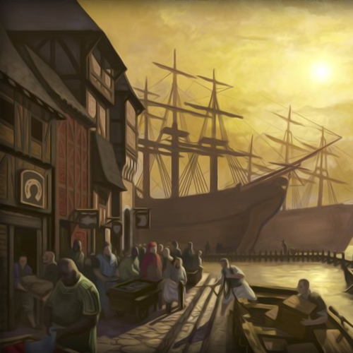
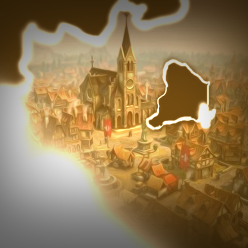
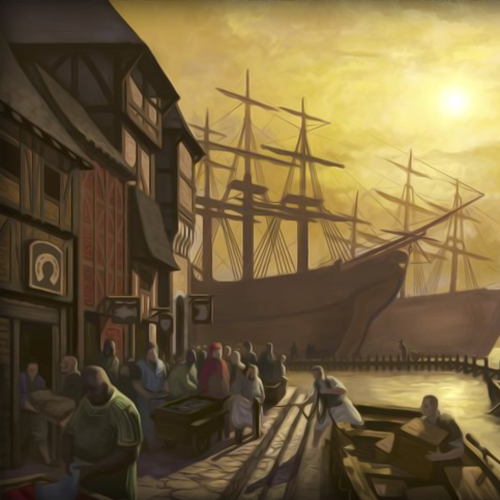
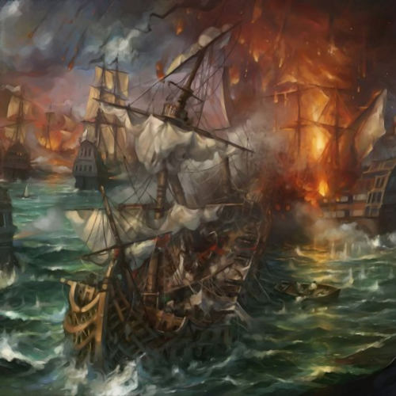
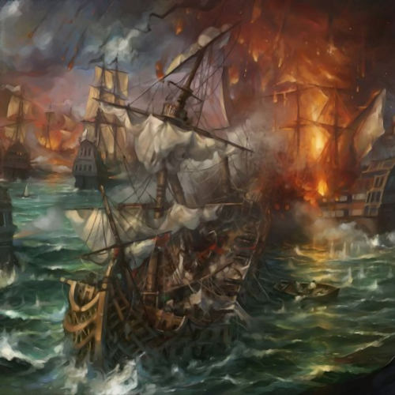

Voltar

A Grande Guerra Leviana
O ano de 614 ficou marcado por aquilo que posteriormente seria conhecido como A Grande Guerra Leviana, conhecida como a maior guerra de todos os tempos, marcou com brutalidade o solo de Mitrael.
Ao final do quinto século da Terceira Era as amarras de uma ditadura imperial
sanguinária
chegava ao fim.
As pessoas comuns tinham mais liberdade e a civilização com muito mais autonomia, a criação do livre mercado fez com que o desenvolvimento crescesse exponencialmente.
 Com novas tecnologias vindo a tona, liberdade de pensamento, algumas pessoas mais sabias e dotadas de inteligencia comecaram a sentir sede de conhecimento e uma vontade natural em desbravar o desconhecido.
Um grupo conhecido como Os Expedicionários começou a se formar.
Composto por pesquisadores, cientistas, alquimistas e até mesmo feiticeiros, este grupo tinha como lema desvendar todos os segredos e misterios por tras da natureza, da magia e do cosmos.
Cedo ou tarde outro grupo tambem atingiria o mesmo feito, porem, talvez por puro destino, estes homens e mulheres foram escolhidos para realizar uma tarefa, da qual se arrependeriam amargamente depois.
O feito?
Eles reuniram as maiores e mais tecnologicas embarcações da epoca e queriam desbravar os oceanos, não apenas para realizar novas descobertas e colonizar novas terras, mas também para confirmar diversas teorias e exeperimentos, como por exemplo se a terra era realmente redonda.
 Desta maneira reuniram grande parte das mentes mais brilhantes e foram em uma frota de 16 embarcações, sendo algumas delas servindo apenas como escolta.
As pessoas comuns tinham mais liberdade e a civilização com muito mais autonomia, a criação do livre mercado fez com que o desenvolvimento crescesse exponencialmente.
 Com novas tecnologias vindo a tona, liberdade de pensamento, algumas pessoas mais sabias e dotadas de inteligencia comecaram a sentir sede de conhecimento e uma vontade natural em desbravar o desconhecido.
Um grupo conhecido como Os Expedicionários começou a se formar.
Composto por pesquisadores, cientistas, alquimistas e até mesmo feiticeiros, este grupo tinha como lema desvendar todos os segredos e misterios por tras da natureza, da magia e do cosmos.
Cedo ou tarde outro grupo tambem atingiria o mesmo feito, porem, talvez por puro destino, estes homens e mulheres foram escolhidos para realizar uma tarefa, da qual se arrependeriam amargamente depois.
O feito?
Eles reuniram as maiores e mais tecnologicas embarcações da epoca e queriam desbravar os oceanos, não apenas para realizar novas descobertas e colonizar novas terras, mas também para confirmar diversas teorias e exeperimentos, como por exemplo se a terra era realmente redonda.
 Desta maneira reuniram grande parte das mentes mais brilhantes e foram em uma frota de 16 embarcações, sendo algumas delas servindo apenas como escolta.
Apos 8 dias velejando sem ver terra alguma, avistaram no horizonte montanhas potiagudas e aparentemente
vermelhas.
Avistaram uma costa onde poderiam finalmente desembarcar por alguns dias, iniciar os estudos desta nova terra era tudo oque tanto desejavam, porém conforme foram se aproximando o calor aumentava insuportavelmente e também avistavam várias silhuetas grandes e largas ao longe.
Ao se aproximarem o suficiente foram recebidos por salvas de flechas flamejantes.
Ao longe ouvia-se os gritos daquele povo que futuramente ficariam conhecidos como "Orc's".
Aquele seres proferiam ferozmente e em sintonia "Askar!, Askar!, Askar!" incessantemente.
As embarcações de escolta comandadas pelos soldados reais , como eram mais robustas devido sua alta taxa de armadura, tomaram a frente, porém seria impossível desembarcarem, além das milhares de flechas pegando fogo, centenas de pequenas embarcações começaram a surgir por de trás das rochas.
 Os apítos de socorro soaram alto nas embarcações remanescentes, com isso o sinal era claro, recuar!
A cena de dezenas de embarcações sendo engolidas por fogo, cheia dos maiores cientistas e pesquisadores, mais rápido do que nunca se deram conta que não estavam preparados para uma batalha de mesmo nível, então decidiram retornar a Mitrael, só não contavam com um detalhe.
Avistaram uma costa onde poderiam finalmente desembarcar por alguns dias, iniciar os estudos desta nova terra era tudo oque tanto desejavam, porém conforme foram se aproximando o calor aumentava insuportavelmente e também avistavam várias silhuetas grandes e largas ao longe.
Ao se aproximarem o suficiente foram recebidos por salvas de flechas flamejantes.
Ao longe ouvia-se os gritos daquele povo que futuramente ficariam conhecidos como "Orc's".
Aquele seres proferiam ferozmente e em sintonia "Askar!, Askar!, Askar!" incessantemente.
As embarcações de escolta comandadas pelos soldados reais , como eram mais robustas devido sua alta taxa de armadura, tomaram a frente, porém seria impossível desembarcarem, além das milhares de flechas pegando fogo, centenas de pequenas embarcações começaram a surgir por de trás das rochas.
 Os apítos de socorro soaram alto nas embarcações remanescentes, com isso o sinal era claro, recuar!
A cena de dezenas de embarcações sendo engolidas por fogo, cheia dos maiores cientistas e pesquisadores, mais rápido do que nunca se deram conta que não estavam preparados para uma batalha de mesmo nível, então decidiram retornar a Mitrael, só não contavam com um detalhe.
Apenas 4 embarcações retornaram com seus tripulantes, alguns feridos porém estavam a salvo.
Durante os 8 dias e noites de retorno foram atormentados pelas lembranças de verem seus semelhantes serem queimados vivos, a expedição tinha se tornado uma catástrofe com perdas imensuráveis para Mitrael.
Um pequeno grupo de cidadãos visualizaram embarcações com as bandeiras dos Expedicionários, porém estranharam o retorno precoce e com tão poucas embarcações, perceberam que havia algo de errado e a notícia se espalhou rápidamente.
Os poucos sobreviventes mal conceguiam falar por conta do trauma e gemiam por conta de delírios, mas, aqueles que ainda tinham um pingo de sânidade, tentaram explicar que foram dizimados por uma raça desconhecida e que havia um risco de uma nova guerra surgir.
O sossego levou apenas 2 dias após a sua chegada para que acabasse por 36 anos.
Uma pequena embarcação oriunda das Terras de Askar desembarcou um pequeno grupo de 6 Orc's, próximo a um vilarejo, mas foi o suficiente para causar a morte de centenas de pessoas que não estavam esperando tal visita.
Devido ser um lugar isolado, onde ocorreu o primeiro ataque, levou alguns dias para que alguém conseguisse espalhar a notícia.
Oque potenciamentel resultou na morte de milhares de inocentes que mal sabiam oque estava acontecendo.
Desta maneira se iniciou uma guerra que moldaria o futuro da vida de milhões de cidadões de milhares de raças.
Durante os 8 dias e noites de retorno foram atormentados pelas lembranças de verem seus semelhantes serem queimados vivos, a expedição tinha se tornado uma catástrofe com perdas imensuráveis para Mitrael.
Um pequeno grupo de cidadãos visualizaram embarcações com as bandeiras dos Expedicionários, porém estranharam o retorno precoce e com tão poucas embarcações, perceberam que havia algo de errado e a notícia se espalhou rápidamente.
Os poucos sobreviventes mal conceguiam falar por conta do trauma e gemiam por conta de delírios, mas, aqueles que ainda tinham um pingo de sânidade, tentaram explicar que foram dizimados por uma raça desconhecida e que havia um risco de uma nova guerra surgir.
O sossego levou apenas 2 dias após a sua chegada para que acabasse por 36 anos.
Uma pequena embarcação oriunda das Terras de Askar desembarcou um pequeno grupo de 6 Orc's, próximo a um vilarejo, mas foi o suficiente para causar a morte de centenas de pessoas que não estavam esperando tal visita.
Devido ser um lugar isolado, onde ocorreu o primeiro ataque, levou alguns dias para que alguém conseguisse espalhar a notícia.
Oque potenciamentel resultou na morte de milhares de inocentes que mal sabiam oque estava acontecendo.
Desta maneira se iniciou uma guerra que moldaria o futuro da vida de milhões de cidadões de milhares de raças.
Em breve...